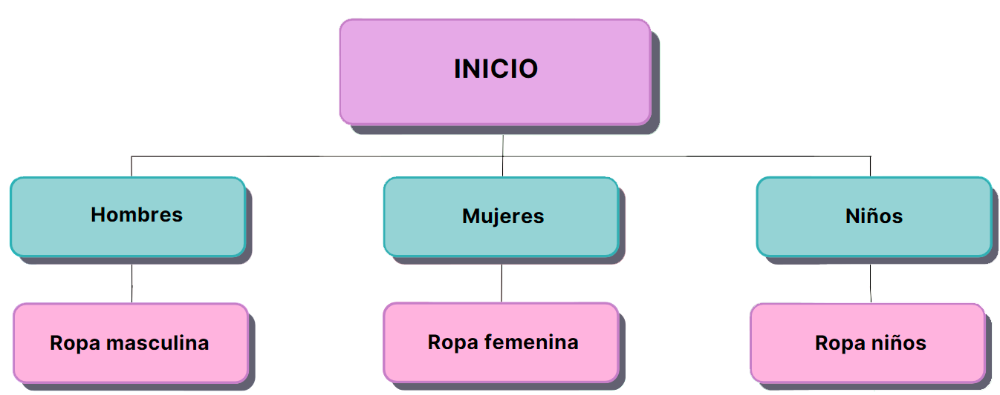

Proyecto - Vintage Clothes
EMPRESA DE PRODUCTOS/EMPRENDIMIENTO
ODS eje 12: Producción y consumo responsables
¿Cuál es la actividad principal de la empresa?
La actividad principal de la empresa consiste en cuidar el medio ambiente con una propuesta
innovadora
mediante la moda circular, evitando asi la contaminación ambiental ocurrida por la fabricación de la
ropa.
¿Cuáles son los objetivos del sitio web que quieren crear?
Nuestros objetivos del sitio web consiste en poder atraer a más gente e introducir a la misma a la
moda circular.
¿Cómo esperan atraer tráfico al sitio web?
Esperamos atraer público de todo tipo mediante la promoción de la página vía redes sociales.
¿A quiénes se dirige la propuesta web? ¿Qué características definen este público objetivo?
Nuestra propuesta va dirigida a jóvenes entre 20 y 40 años que estén interesados en colaborar con el
medio ambiente y
a su vez que le guste la ropa vintage.
Logo de la empresa - Vintage Clothes

Con respecto a la paleta de color decidimos usar un color oscuro negro.
Nuestro dominio va a ser "www.vintageclothes.com.ar"
Deseamos transmitir responsabilidad y conciencia.
Árbol del sitio

Contenidos de cada página
Los contenidos de la página principal consiste en: una parte de información sobre la conciencia
ambiental
y la moda circular. En otra parte disponemos de otra página en el cual permitimos que los
consumidores pueden realizar
una o varias donaciones. Y luego tenemos 3 páginas enfocadas a los distintos tipos de ropa que
vendemos clasificados
según el género. También tenemos una página de inicio de sesión y una de carrito de compras donde
cualquier consumidor
puede elegir aquello que desea comprar.
Roles de cada integrante
Diseñadora UX/UI: Josefina Mosca
Maquetador: Tomás Arcapalo
Programador: Gianfranco Mazzei
Comunicadora Web: Bárbara Díaz Malcó